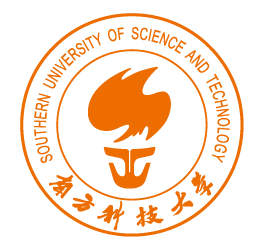

About Me
Hello! I am Xuanran Li, currently an undergraduate student at Southern University of Science and Technology (SUSTech), majoring in Mathematics and Applied Mathematics.
My academic advisor is Associate Professor Ziming Nikolas Ma in the Department of Mathematics, but I am actually advised and collaborating with Associate Professor Ming Tang in the Department of Computer Science and Engineering.
My research interests include Deep Learning Optimization, and Knowledge Editing in LLMs.
You can download my CV here (Update: April 2026).
I am looking for PhD opportunities or a full-time RA position in 27 Fall.
News
Started remote research internship at PRADA Lab, KAUST!
May. 2026
Honored to be advised by Prof. Ming Tang!
Jun. 2025
Education

Southern University of Science and Technology
B.S. in Mathematics and Applied Mathematics
Sept. 2023 - Jun. 2027 (Expected)
Experience

PRADA Lab, King Abdullah University of Science and Technology
Remote Research Intern
Advisor: Assistant Professor Di Wang
May. 2026 - Present
Southern University of Science and Technology
Undergraduate Research Assistant
Advisor: Associate Professor Ming Tang
Jun. 2025 - Present
Publications
-
Learning without Global Backpropagation via Synergistic Information DistillationIn Preparation
-
SFL-DiMask: Split Federated Learning with Gradient-Saliency Masking for Domain GeneralizationACM MM 2026, under review